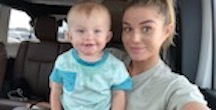

With not too many classes remaining, I will be earning my bachelors degree in the near future in Marketing with a minor in technical (professional) writing. I am the epitome of what you call a "non-traditional" student. I finished high school a year early, meaning applying to college happened at the age of 16 for me. I was 17 when I started my first year, and as you can imagine, I had not a clue to what direction I wanted to lead myself in. I decided to take time away to better learn what it was I wanted to focus my education on, and build upon my future endeavors. I ended up spending a year in Boston, then a year outside Philadelphia.
Once returning to school, I found myself better acknowledging the value of education and taking on my studies with new motivation. Deciding on a major was the biggest struggle I found myself facing, being interested in so many different areas, I wasn't confident in committing to one. I ultimately decided to place my focus on marketing because near every industry implements marketing in some way or another. Not only does marketing include the opportunity for my likings of research and analysis, it also gives opportunity to be involved in a magnitude of fields. Still, I do not have a specific career positioning in mind, as I am open to, and interested in experiencing what new opportunities could deliver. There is so much out in the world I am yet to realize or discover. I hope that in making the effort to be without restrictions and open-minded to where my degree allows me, I will enable new experience and new discoveries about myself awhile growing and developing my professional capabilities.

Luka has acted as my driving force in endless self betterments, motivation and striving to excel in my academics. I took no time off of school, just reduced my course load for the semester he arrived in Fall of 2018, and jumped right back into five courses for the Spring Semester. As one of my greatest and worst traits, I've always held myself to rather high standards. This only intensified knowing all I do is to help create the best life possible for Luka, wanting to provide all his needs and be able to support opportunities for his future interests and goals, whatever they may become. I have not yet learned to view time as a friend, as I feel there are not enough hours in the day. The balance of being both a Mother, student and getting adequate amounts of sleep is such a difficult task. A social life is truly not even apart of the equation. For now, I get my dose of socialization between classes and attending Miks' basketball games. There is always a sense of guilt lingering above, concerned whether Luka got all he needed from me in a day, and enough time spent with him as my only focus. This often leads me to late nights, taking the opportunity of the world's dormant hours to really submerge myself into course content. Although an overload of tasks, it's so much better than missing the moments I share with my little man. It is not forever, and will be so worth it in the end.